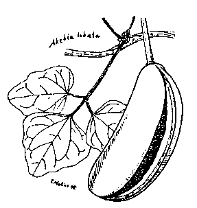

| アケビ | |
| 牧野 富太郎 | |
| (2012) | |
アケビ
牧野富太郎
野山へ行くとあけびというものに出会う。秋の景物の一つでそれが秋になって一番目につくのは、食われる果実がその時期に熟するからである。田舎の子供は栗の笑うこの時分によく山に行き、かつて見覚えおいた藪でこれを採り嬉々として喜び食っている。東京付近で言えば、かの筑波山とか高尾山とかへ行けば、その季節には必ず山路でその地の人が山採りのその実を売っている。実の形が太く色が人眼をひく紫なものであるから、通る人にはだれにも気が付く。都会の人々には珍しいのでおみやげに買っていく。
紫の皮の中に軟らかい白い果肉があって甘く佳い味である。だが肉中にたくさんな黒い種子があって、食う時それがすこぶる煩わしい。
中の果肉を食ったあとの果皮、それは厚ぼったい柔らかな皮、この皮を捨てるのは勿体ないとでも思ったのか、ところによればこれを油でいため、それへ味をつけて食膳に供する。昨年の秋箱根芦の湯の旅館紀伊の国屋でそうして味わわせてくれた。すこぶる風流な感じがした。
今日でもそうかも知らんが、今からおよそ百年ほど前にはその実の皮を薬材として薬屋で売っていた。それは肉袋子という面白い名で。

そこで右のあけびの実だが、その実の形は短い瓜のようで、熟すると図に見るようにその厚い果皮が一方縦に開裂する。始めは少し開くが後にだんだんと広く開いてきて、大いに口を開ける。その口を開けたのに向かってじいっとこれを見つめていると、にいっとせねばならぬ感じが起こってくる。その形がいかにもウーメンのあれに似ている。その形の相似でだれもすぐそう感ずるものと見え、とっくの昔にこのものを山女とも山姫ともいったのだ。なお古くはこれを、※［＃「くさかんむり／開」、85-15］
と称した。すなわちその字を組立った開は女のあれを指したもので、今日でも国によるとあれをおかい又はおかいすと呼んでいる。これはたぶん古くからの言葉であろう。そしてこの植物は草である（じつは草ではなく蔓になっている灌木の藤本だけれど）というので開の上へ草冠を添えたものである。こんなあだ姿をしたこの実から始めてあけびの名称が生まれたのだが、このあけびはすなわちあけつびの縮まったもので、つびとは、ほどと同じく女のあれの一名である。しかし人によってあけびは開肉から来たと唱えている。すなわちその実が裂けて中の肉を露わすからだといい、また人によってあけびは欠伸
から出た名だといっている。すなわちその実の裂け開いたのを欠伸口を開くに例えたものである。国によるとあけびをあくびと呼んでいる所がある。なおあけびの語原についてはその他の説もあるが、しかし上の開肉の説も欠伸の説もなにもまずいことはないがあまり平凡で、かえって前の開けつびの方が趣があって面白く、また理窟にも叶っている。そのうえ既に昔に※［＃「くさかんむり／開」、86-12］
の字を書いたりまた山女、山姫の字を用いたりしたところをもってみれば、その方の説を主張してもまんざら悪いこともなかろうと思う。あけびを一つにおめかずらと称え、またおかめかずらと呼ぶのもけだし女に関係を持たせた名であろう。
右のように、元来あけびは実の名であるがそれが後には植物を呼ぶようになっている。しかし本当はその植物を指す場合にはすべからく、あけびかずらというべきである、この称呼は既に古からあったのである。
あけびの実はなかなかに風情のあるものであるから、俳人も歌よみもみなこれを見逃さなかった。昔の連歌に山女（あけび）を見て「けふ見れば山の女ぞあそびける野のおきなをぞやらむとおもふに」と詠んでいる。この「野のおきな」はところすなわちよく野老と書いてある蔓草の根（地下茎）をいったものである。また「いが栗は心よわくぞ落ちにけるこの山姫のゑめる顔みて」とよめる歌の返しに「いが栗は君がこころにならひてや此山姫のゑむに落つらん」というのがある。すなわち山姫はあけびを指したものである。また山女と題して「ますらをがつま木にあけびさし添へて暮ればかへる大原の里」の歌もある。また俳句もかずかずあるがその中に子規のよんだのに「老僧にあけびを貰ふ暇乞」がある。露月の句に「あけび藪へわれより先に小鳥かな」があり、李圃の句に「ひよどりの行く方見れば山女かな」がある。また箕白の句に「あけび蔓引けば葉の降る秋の晴」、蝶衣の句に「山の幸その一にあけび読れけり」がある。また「口あけてはらわた見せるあけびかな」という句があった。これは自分の拙吟だが「なるほどと眺め入ったるあけび哉」、「女客あけびの前で横を向き」これはどうだと友達に見せたら、そりゃー川柳へ入れたらよかろうと笑われた。
わが日本にはふつうあけびに二種（いま別にあいの子の一種があれど）あって、一般にはこれらを通じてあけびといっている。今日の植物学界ではその中の五葉のものを単にあけびと称え、他の三葉のものをみつばあけびと呼び、かようにそれを二種に区別している。
右のあけびもみつばあけびも植物学上からいえば、共にその蔓が左巻きをしている纏繞藤本で、すなわち灌木が蔓を成したもので、それはふじなどと同格である。葉は冬月落ち散り、掌状複葉で長き葉柄を具えて互生し、花は四月頃に房をなし雄花雌花が同じ穂上に咲き、花には紫色の三萼片のみあって花弁はなく、雄花には雄蕋
があり雌花には雌蕋
があって、この雌花は雄花より形が大きく、かつ花の数が少ない。
果実はみつばあけびの方がその皮の紫が美麗でかつ形が大きく、食用にはこの方がよい。
市中に売っているあけびの「バスケット」はどのあけびで作るか。通常これをあけびの「バスケット」というもんだから、それをふつうのあけびで作ると思っている者が多かろう。植物専門の博士でさえそう思い違いをして、これを書物に書いた滑稽があった。しかしこの「バスケット」を作るあけびはまったくみつばあけびで、ふつうのあけびは用いない。みつばあけびはその茎の本からきわめて細長い枝が発出して、それが地面を這って延びているので、それを採り来たり皮を剝いで「バスケット」に製する。ふつうのあけびにはこの細長き枝蔓が出ないから問題にならぬ。わが邦東北の諸国にてあけびといえば、そこに多いこのみつばあけびのみで、そこでは単にあけびと称える。ゆえに主として東北地方から産出するその「バスケット」を、あけびの「バスケット」と呼ぶのも無理はない。
ふつうのあけびの芽だちの茎と嫩
き葉とを採り、ゆでてひたし物とし食用にする。これを蒸し乾かしお茶にして飲用する。山城の鞍馬山の名物なる木の芽漬はこの嫩葉を忍冬
の葉とまぜて漬けたものである。
従来わが邦の学者は、わがあけびを支那の通草一名木通に当てていた。ゆえにあけびが薬用植物の一つになっていた。しかるに近頃の研究では、右の通草すなわち木通はあけびではないということになったので、そこであけびが果して薬になるかどうかということが分からなくなってしまった。
ここに面白いことは、このあけびの学問上の属名をあけびあ、すなわち Akebia ということである。これは無論日本名のあけびを基として作られた世界共通の属名である。そしてその中のあけびをば Akebia quinata と称し、みつばあけびをば Akebia lobata と称する。これは学問上の通称で、この名であれば世界中の学者にはだれにでも通ずる。学問上にはどの植物にもこんな公称があって学者はこれを使用しているのである。あまり長くなるのであけびの件これで打ち止め。
底本：「花の名随筆10
十月の花」作品社
１９９９（平成11
）年9
月10
日初版第1
刷発行
底本の親本：「牧野富太郎選集 第三巻」東京美術
１９７０（昭和45
）年6
月発行
入力：門田裕志
校正：川山隆
２００７年12
月19
日作成
青空文庫作成ファイル：
このファイルは、インターネットの図書館、青空文庫（http://www.aozora.gr.jp/）で作られました。入力、校正、制作にあたったのは、ボランティアの皆さんです。